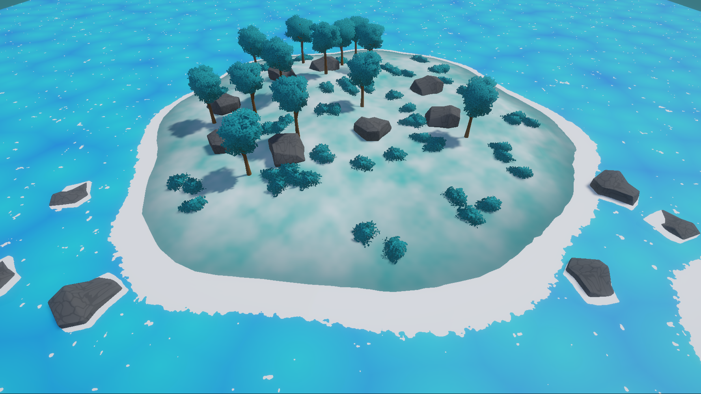

Independent hobby developer creating game development assets and tools.
Welcome to my support and documentation page. I create assets for game developers, with a focus on simple, useful, and easy-to-customize content for personal and commercial projects.

This package includes a stylized water shader, a simple terrain shader, and basic foliage assets. It is designed for developers who want a clean, colorful environment style for their projects.
This package is free to use in any personal or commercial project. Credit is not required, but a reference or link back would be greatly appreciated.
This is my first package, so suggestions and feedback are very welcome. Thanks for checking it out!
Documentation is included with the asset package. It contains setup information, usage notes, and basic customization guidance.
For support, please contact: j_morawsi@outlook.com
When contacting support, please include:
I usually respond within 2–5 days.
This asset package does not collect personal data, use analytics, or require an online account.